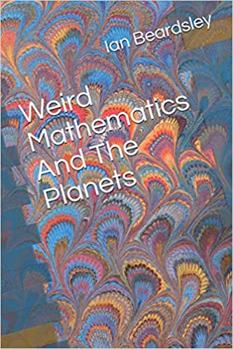
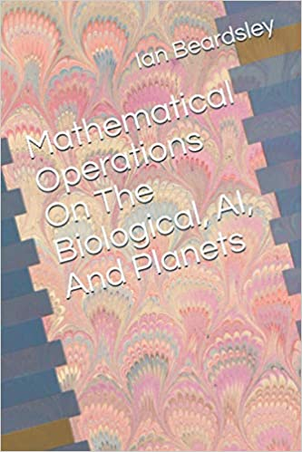

Home
Home
Fundamental Content
Genesis Project strives to solve the mystery of creation. At the bottom of each page in parts 1, 2. 3 .4 .5 ,6 there will be links to click on; they will take you to the old homepage, not the new one(Last updated Dec 16 2020)
Bulerias Metronome
Using Intuition (Intuiendo, Bulerias)
Preston Nichols, who is no longer with us, worked on a secret government project called Montauk. He recreated the engine part of the time machine, at his home. He found that God was something we could best call something like a computer, at the center of the Galaxy. I am beginning to find this may be true in that I am finding the solar system might be designed in the image of AI, or that the Universe could be a gantry network of electrical components, some kind of a circuit. To see my findings indicating this read my paper Analysis of Planetary Equations. Here is the video where Nichols explains this…
Click Here To Read Analysis of the Planetary Equations (Posted Jan 28 2021)
The Titius-Bode rule describes the distribution of the planets around the sun, but starts to fail pretty bad at Neptune. I have devised several schemes in terms of various factors to describe the distribution of the planets. One prominent feature in these instances is that two planets stick out in their characteristics, Venus and Mars. Other than Mercury and Earth, these are the solid, terrestrial planets; the rest are gas giants. They are on either side of the Earth and the closest to it. Venus is closer to the Sun than our Earth and Mars is further. Venus and Mars have always been of great interest to us. Venus to the Russians as they have sent several probes to it and Mars to the United States as we have sent several roaming landers to it. This is interesting, Venus is often called the sister planet to Earth, because it is of similar size and mass as Earth. It would seem she was once much cooler but underwent a runaway greenhouse effect making it too hot to be habitable, hence its interest to the Russians, and Mars while further from the sun and colder than the Earth, it is still habitable, and thus colonizable, and hence its interest to the United States. Interestingly in our search for life on Mars, we recently found hints of microbial life in the atmosphere of Venus (2020). Often I don’t include Mercury because it is so small and not very massive so it didn’t contribute much to the nature of the protoplanetary disc from which the planets formed, and mostly because its orbit is so eccentric that it might not make sense to consider its average orbital distance. The purpose of this paper is to explore the equations of Venus and Mars, as they are pivotal in the importance of human destine. I also pull perfect expression out of different schemes to begin to make a perfect table. The schemes have theoretical implications in mathematics and physics, but this is treated in other works. It would seem running through the thread of solar system origin and structure is the recurring motif of artificial intelligence logic circuitry theory. Guessing a solution to a weird problem requires weird mathematics. I create weird arithmetic. It would seem the distribution of the planets have an AI motif. At this point I suggest that it defies a single algebraic expression because it may be that it uses logic gate arithmetic, which does not follow arithmetic as is done in mathematics, but rather in creating logic circuits with the seven basic gates.
Click Here To Read Mathematical Operations On Nature (Posted Jan 23 2021)
It is convenient to put everything done up to this point in one document.
Click Here To Read Weird Calculus (Posted Jan 17 2021)
We see that when we try to express the distribution of the planets in terms of Euler’s number (e) and the golden ratio conjugate (phi), the scheme suggests that the planets are doing what I call a weird calculus. It is where the derivative of the exponential e to the x is not itself, as it is in regular calculus, as arises from the conundrum of trying to take the integral of 1/x. But rather follows suit with... We further see that the planets in terms of e and phi, quantize in terms of whole numbers in suit with digital binary used in artificial intelligence logic circuitry. With the suggestion of a weird calculus we suggest the existence of a weird arithmetic, which we find when compared to regular arithmetic and expanded with a Taylor series creates terms which accurately describe the distribution of the planets as well if we compare the regular arithmetic to the weird arithmetic. Equating the the distributions of weird calculus with those of weird arithmetic we find that we arrive at an exponential function that relates regular calculus to weird calculus because the terms of the Taylor expansion are regular derivatives.
Click Here To Read Weird Mathematics and Nature (Posted Jan 9 2020)
The planets seem to suggest the existence of a weird differential calculus, and weird arithmetic. This in turn suggests a weird integral calculus for the hydrogen atom.
Click Here To Read The Full Manuscript
This is the full manuscript, which is broken up below for ease of management. It is available for download in the downloads section.
Click Here To Read Weird Mathematics And The Planets
It is as if the planets interior to the asteroid belt are distributed by doing what I call weird calculus. And, that the planets exterior to the asteroid belt are doing normal calculus. It is as if the planets interior to the asteroid belt are trying to take the derivative of x to the n without using logarithms. There seems to be a connection between artificial intelligence elements and the planets, and these in turn to biological life elements.

Of all the connections I have made between artificial intelligence that of bone stands out as the most interesting.

Boron is a doping agent for artificial intelligence semiconductor materials, and anything but boring, which are primarily silicon and germanium But, it stands in relation on the periodic table differently than the other principle doping agents, phosphorus, arsenic and gallium. This results in some interesting equations.

Mathematical Operations on AI and the Planets
The relationships between the masculine and feminine in terms of artificial intelligence is quite egalitarian.

The Quantization of the Planetary Orbits in Terms of Euler's Number and Phi
With several different schemes to predict the planetary orbits we look at the asteroid Ceres.